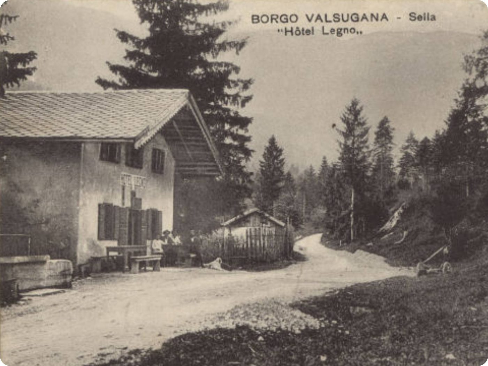
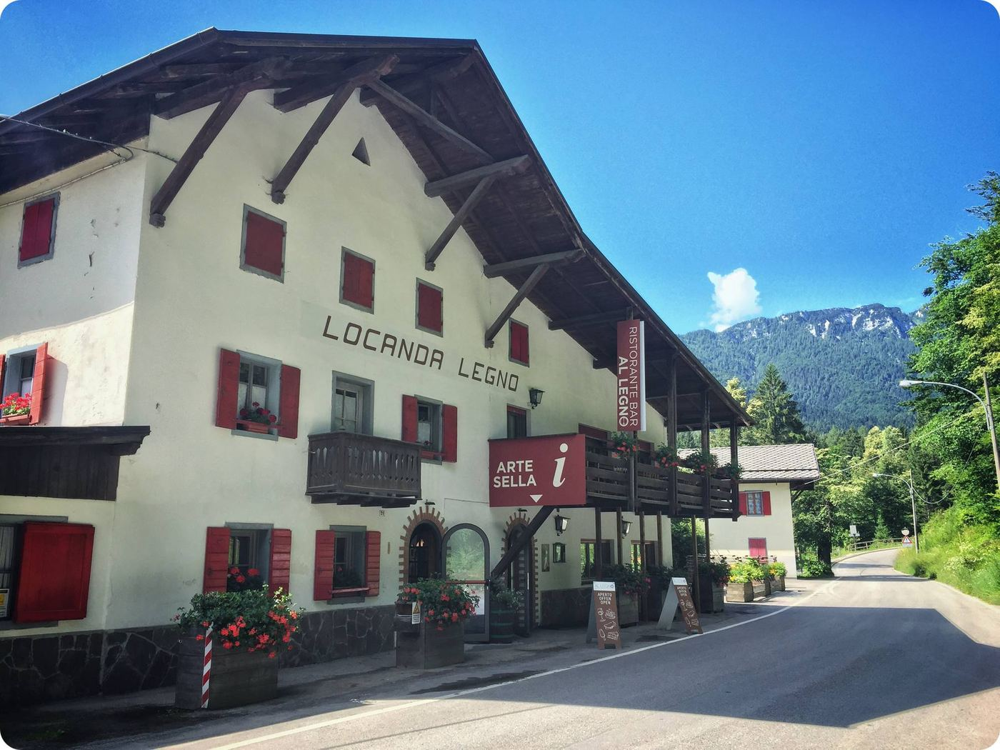
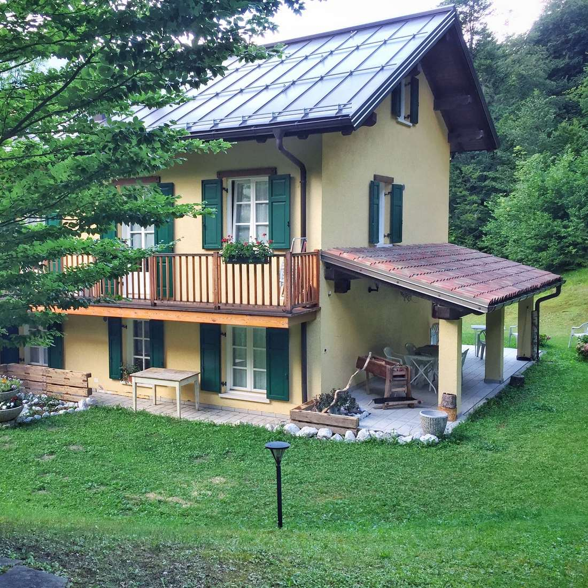
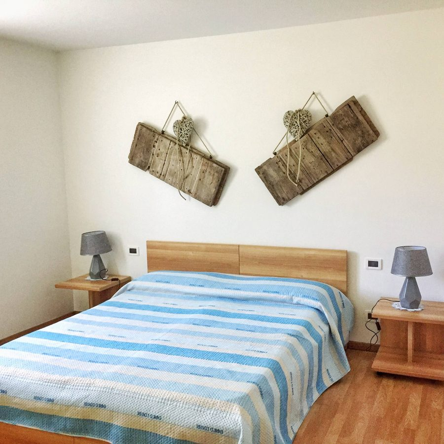
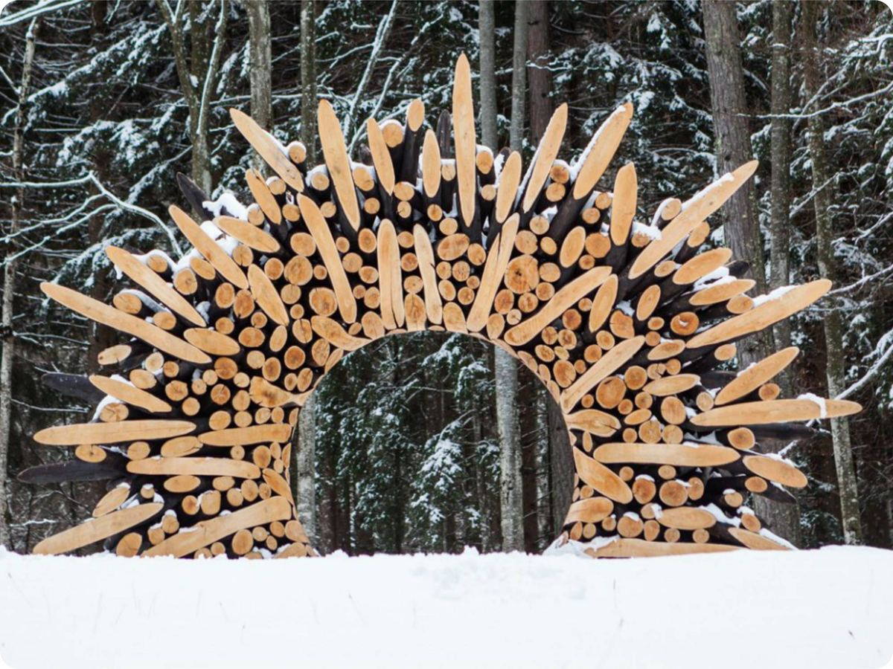

IeriOggiTrascinate la maniglia: la locanda com'era e com'è oggi.
200 anni di storia in Val di Sella
All'inizio della Val di Sella trovate al Legno, il luogo ideale per un pasto gustoso e per una vacanza rilassante nella natura.
La Casina di Sella
Immersa tra i faggi e il verde della Valle di Sella, il posto giusto per una vacanza di relax, in tranquillità e serenità. Ideale per un weekend romantico, con gli amici o in famiglia.
- Giardino
- Barbecue
- Terrazza coperta
- Parcheggio gratuito
- Lenzuola e asciugamani
- Lavanderia


Appartamento Comfort
Fino a 4 personeCucina abitabile, una camera matrimoniale e una con due letti singoli, bagno con doccia.
Chiedi le dateAppartamento Superior
Fino a 6 personeCucina e soggiorno abitabili, una camera matrimoniale e una con quattro letti singoli, divano letto.
Chiedi le dateAppartamento Family
Fino a 8 personeCucina e soggiorno abitabili, quattro camere da letto, divano letto: per le famiglie numerose.
Chiedi le date

A due passi, Arte Sella
Quando arte, creatività e natura si incontrano nasce Arte Sella, un luogo speciale che cresce e si evolve stagione dopo stagione. Noi siamo all'inizio della valle.
Il sito di Arte SellaPrenotate il vostro tavolo
Per pranzi, cene o feste in famiglia e tra amici, per gli eventi e per la disponibilità degli appartamenti: chiamateci o scriveteci.